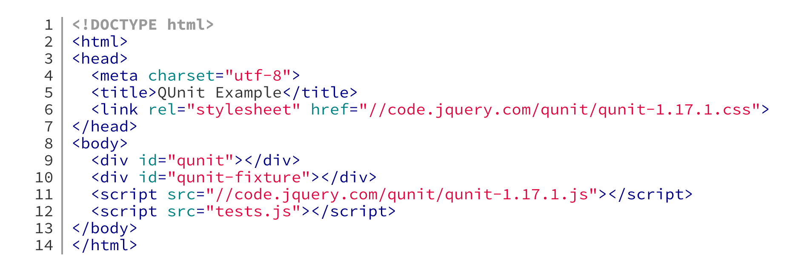

Presented by Kat Bailey / @katherinebailey
$(document).ready(function() {
if (Drupal.settings.hasOwnProperty('personalization')) {
var settings = Drupal.settings.personalization;
var $option_set = $(settings.selector);
$.ajax({
'url': 'http://www.my-personalization-service.com/get-decision',
'data': {'options': settings.options},
'success': function(response) {
var choice = response.data.choice;
// [Various edge case logic...]
var json = $('script[type="text/template"]', $option_set).get(0).innerText;
var choices = jQuery.parseJSON(json);
var chosen = choices[choice]['html'];
$option_set.append(chosen);
}
});
}
});
Call Stack
(anonymous) some_file.min.js:10
(anonymous) some_file.min.js:30
(anonymous) some_file.min.js:15
(anonymous) some_file.min.js:21
(anonymous) some_file.min.js:20
(anonymous) some_file.min.js:19
(anonymous) some_file.min.js:18
(anonymous) some_file.min.js:14
(anonymous) some_file.min.js:13
(anonymous) some_file.min.js:12
(anonymous) some_file.min.js:11
(anonymous) some_file.min.js:1
Drupal.personalize.showChoice = function($option_set, choice) {
// [Various edge case logic...]
var json = $('script[type="text/template"]', $option_set).get(0).innerText;
var choices = jQuery.parseJSON(json);
var chosen = choices[choice]['html'];
$option_set.append(chosen);
};
$(document).ready(function() {
if (Drupal.settings.hasOwnProperty('personalization')) {
var settings = Drupal.settings.personalization;
var $option_set = $(settings.selector);
$.ajax({
'url': 'http://www.my-personalization-service.com/get-decision',
'data': {'options': settings.options},
'success': function(response) {
Drupal.personalize.showChoice($option_set, response.data.choice);
}
});
}
});
The test suite corresponds to a single html file which loads QUnit and your tests to be run.
In general, use a different suite per area of functionality being tested.
tests.js
QUnit.test( "hello test", function( assert ) {
assert.ok( 1 == "1", "Passed!" );
});
QUnit will reset the elements inside the #qunit-fixture element after each test
All tests that occur after a call to QUnit.module() will be grouped into that module
Drupal.settings?
QUnit.module("Tests that rely on some settings", {
'setup': function() {
Drupal.settings.personalize = {
'option_sets': {
'option-set-1': {
'selector': '.some-class',
}
}
};
},
});
Add them to your test suite
Add them to your test suite
Glad you asked! :D
Glad you asked! :D
.. and spies
.. and spies
Different types of test doubles that serve slightly different purposes
Different types of test doubles that serve slightly different purposes
A function that records arguments, return value, the value of this and exception thrown (if any) for all its calls.
A test spy can be an anonymous function or it can wrap an existing function.
Spy
// Create an anonyous spy.
sinon.spy();
// Spy on a particular function.
sinon.spy(myFunc);
// Spy on a method of an object.
sinon.spy(myObj, 'mymethod');
Spy
var myCallback = sinon.spy();
// Pass my spy to the function I'm testing.
myFuncThatShouldCallMyCallback(myCallback);
// Confirm my spy was called.
assert(callback.called);
See http://sinonjs.org/docs/#spies for more things you can do with spies.